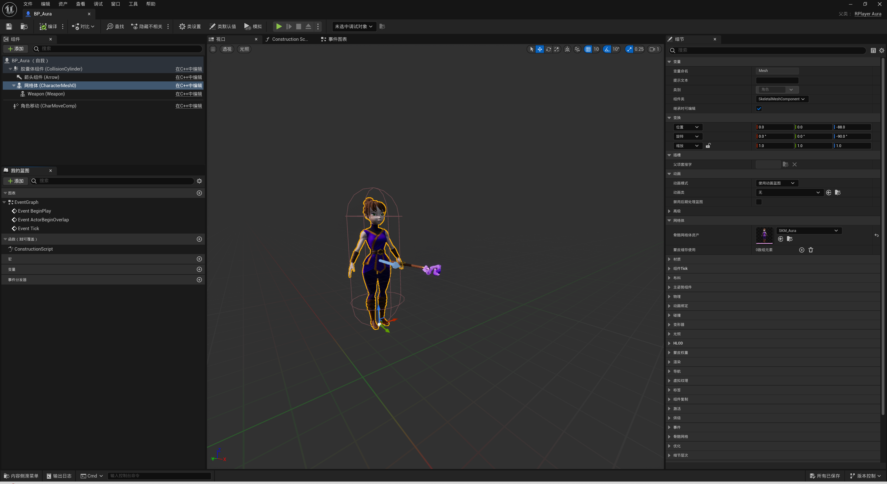
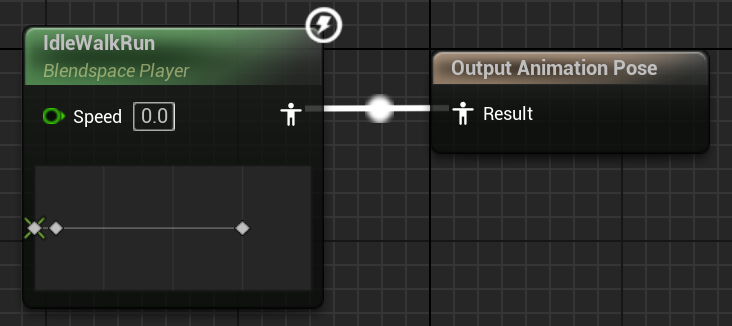
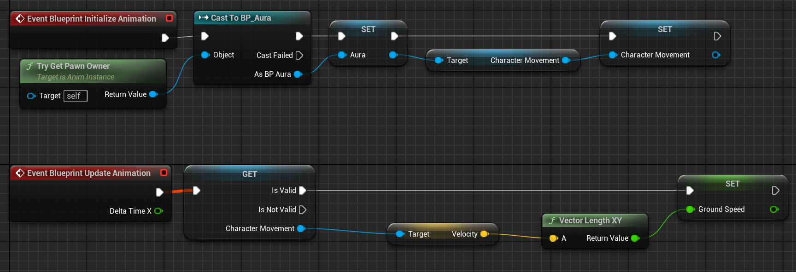

通过实现一个 RPG demo，学习 UE Gameplay 基本设计，以及 GAS 用法。
参考资料：
#准备工作
#下载 Unreal Engine 与 Visual Studio
最终得到的是 Epic Games，可以用 steam 登录，之后下载最新版虚幻引擎。此时是 5.4.3 版本。
下载 Community 2022 版。
根据这个教程进行 VS 相关组件的安装。
同时去虚幻商城搜索并安装「Visual Studio Tools」。
🍕可选：安装 Visual Assist 破解版。
#创建新项目
选择「空白项目」，在项目默认设置中选择「C++」，并取消勾选「初学者内容包」，选择项目位置和项目名称 ActionRPG，点击创建，经过亿点时间后，我们就能在编辑器中看到我们新建的项目了。
#引入美术资产
把原项目 git clone 下来，然后把 Content/Assets 这个文件夹全部拷贝到自己的项目中。
#🍕可选设置
在「编辑」「编辑器偏好设置」中：
-
关闭「启用实时代码编写」与「自动编译新添C++类」；
-
设置「资产编辑器打开路径」为主窗口；
在「编辑」「项目设置」中：
-
任意修改「版权声明」，这会出现在新建的
.cpp/.h文件的第一行。
#创建角色
#新建 C++ 类
「工具」「新建C++类」「角色」
需要一个基类 RCharacterBase 来抽象表示所有角色（玩家和敌怪）共有的属性与方法，这样在需要新增角色时只需从其派生即可。
这里可以在 UCLASS 宏中加入
Abstract属性说明符，表示这是一个抽象类。同时考虑到敌怪不需要接受玩家输入，可以删除
SetupPlayerInputComponent()函数，留到派生的玩家类中实现。出于性能考虑，
Tick()函数也没有留下的必要，因为后续 coding 过程中并不需要在「每帧」执行某些行为。构造函数中的变量
PrimaryActorTick.bCanEverTick也可以设置为 false。
同样的，我们可以创建玩家基类 RPlayerBase 和敌怪基类 REnermyBase，只需派生自 RCharacterBase 即可。
#角色类设计
本项目中，所有角色都会持有武器，所以需要在头文件中添加一个表示武器的成员变量
Character/RCharacterBase.hUCLASS(Abstract) class ACTIONRPG_API ARCharacterBase : public ACharacter { GENERATED_BODY() public: ARCharacterBase(); protected: virtual void BeginPlay() override; UPROPERTY(EditDefaultsOnly, Category = "Apperance") TObjectPtr<USkeletalMeshComponent> Weapon; };
然后在角色类的构造函数中实现相应逻辑
Character/RCharacterBase.cppARCharacterBase::ARCharacterBase() { PrimaryActorTick.bCanEverTick = false; // 生成名为 Weapon 的 SkeletalMeshComponent，并添加至 Mesh 的 WeaponHandSocket 插槽上 // 同时设置碰撞类型为 忽略所有碰撞 Weapon = CreateDefaultSubobject<USkeletalMeshComponent>("Weapon"); ensure(Weapon); Weapon->SetupAttachment(GetMesh(), FName("WeaponHandSocket")); Weapon->SetCollisionEnabled(ECollisionEnabled::NoCollision); }
最终得到下面这样一个角色类树状结构
Character
│ RCharacterBase
│
├─Enermy
│ │ REnermyBase
│ │
│ ├─Goblin
│ | RGoblin
| | ...
| └─...
│
└─Player
RPlayerBase
...#遇到的一些知识点
这里就涉及到很多知识点了。
#虚幻命名规则
UE 会根据一定命名规则为类型添加相应的字母前缀，以更好地辨认一个类名。常见的有以下几种：
-
A：Actor的派生类。 -
U：Object的派生类。 -
F：非虚幻对象的类，通常是一些辅助类或数据结构。 -
I：Interface，接口类。 -
T：Template，模板类。 -
S：Slate UI，SWidget的派生类， -
E：Enum，枚举类。
这里就在 RCharacterBase 类前加入了前缀 A。
#虚幻的宏
UCLASS() 宏用于定义一个类，告诉引擎如何处理这个类，以便它能够在编辑器中使用并在蓝图中被继承和实例化，同时能够与反射系统进行交互，使其能够在运行时被识别和操作。
UPROPERTY() 同理，用于类的成员变量，以定义它们的属性和行为。常用的有以下属性说明符：
-
VisibleDefaultsOnly：指示此属性仅在原型的属性窗口中可见，不能编辑。
-
VisibleInstanceOnly：指示此属性仅在实例的属性窗口中可见，不能编辑。
-
VisibleAnywhere：指示此属性在所有属性窗口中都可见，但无法编辑。
-
EditDefaultsOnly：指示此属性可由属性窗口编辑，但只能在原型上编辑。
-
EditInstanceOnly：指示此属性可由属性窗口编辑，但只能在实例上编辑。
-
EditAnywhere：指示此属性可由属性窗口编辑，且能对原型和实例编辑。
-
BlueprintReadOnly：在蓝图中可见但只读。
-
BlueprintReadWrite：在蓝图中可见且可编辑。
GENERATED_BODY() 宏就比较简单，会生成一些额外的代码，包括 new/delete 操作符重载、拷贝构造、移动构造、析构函数等基础函数，以及一些额外的 UE 功能。
ensure 是一个用于调试的宏，用于在运行时检查条件是否为真。如果条件为假，程序将停止执行，并在调试环境下显示错误信息，以便开发者可以及时发现和修复问题。
#玩家蓝图类与武器生成
首先参考以上步骤，创建一个派生自 RPlayerBase 的类 RPlayer_Aura，这就是我们实际要控制的玩家了，可以在 C++ 中加上 final 修饰。
在 Content/BluePrint/Character/Player 目录下创建派生自 RPlayer_Aura 的蓝图类，并命名为 BP_Aura，前缀 BP 表明这是一个 BluePrint。
进入编辑器后，点击「网格体」，设置「骨骼网格体资产」为 SKM_Aura，同时调整一下网格体的位置，我这里是位置 (0, 0, -88)，旋转 (0, 0, -90°)。
点击「Weapon」，设置「骨骼网格体资产」为 SKM_Staff，发现武器出现在了正确的位置，这是因为开发者已经贴心地为我们在 SKM_Aura 中添加了相应插槽，并设置了正确的位置，所以直接使用即可。最后结果如下：
Enermy 是同理的，也只需应用相应的两个骨骼网格体资产即可。
#让 Aura 动起来
#动画蓝图初识
动画蓝图是一种用于创建角色动画逻辑的视觉化编程工具，可以和角色骨骼体绑定，使角色具备根据不同状态，播放不同骨骼动画的能力。可以在动画蓝图中定义状态机，里面有很多自定义的状态，不同状态与不同的骨骼动画绑定，不同的状态之间具有转换规则，满足规则就切换状态，从而可以根据状态播放不同的动画。
#创建动画蓝图
「内容浏览器」「添加」「动画」「动画蓝图」
选择合适的骨骼网格体后，就可以创建与之对应的动画蓝图类了，这里将其命名为 ABP_Aura。首先在蓝图中创建一个 State Machine，并命名为 Main State。
双击进入其中，可以看到有个「Entry」，这就是 State Machine 的入口，通过拖拽可以「添加状态」，这就形成一个有向图，意味着一旦从 Entry 进入任一状态，都将在本 State Machine 中逗留。
新建一个状态命名为 IdleWalkRun 用于输出 Aura 站立、行走、奔跑的动画。
双击进入其中，发现只有一个「Output Animation Pose」节点，我们要做的就是在内部通过一定手段将处理后的姿势输出。幸好开发者为我们提供了相应资产，在「资产浏览器」中，可以看到有个「IdleWalkRun」的文件，拖拽到窗口中，发现是一个混合空间播放器，其实是利用了插值，将静止、行走、奔跑三者根据人物速度混合到同一个动画中。
它需要一个浮点数 Speed 来控制输出结果，那么我们就需要在动画的每一帧都获取 Aura 的移速，从而进行正确插值，获取结果。在事件图表中设置如下节点即可。
最后将变量 Speed 连接到 Blendspace Player 的输入上。
#应用动画蓝图
进入 BP_Aura，左键「网格体」在「细节」栏中设置「动画类」为 ABP_Aura_C。编译蓝图，看到正确结果。